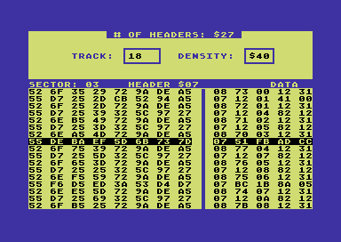
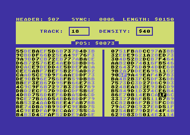
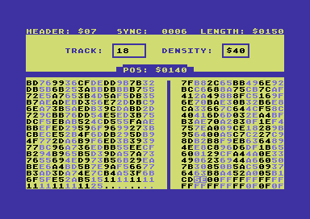
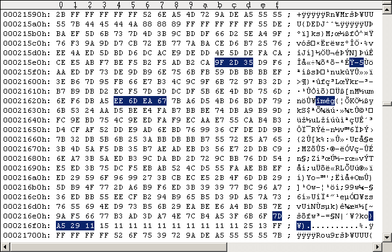
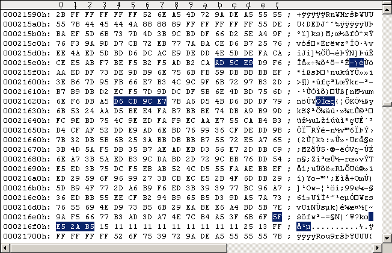
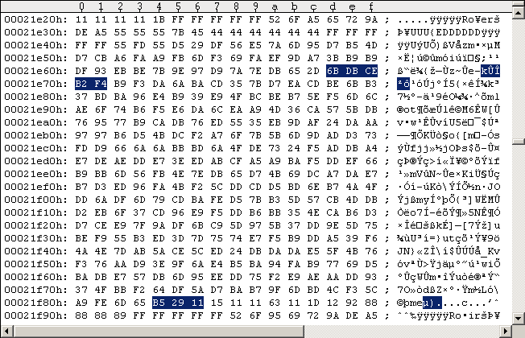
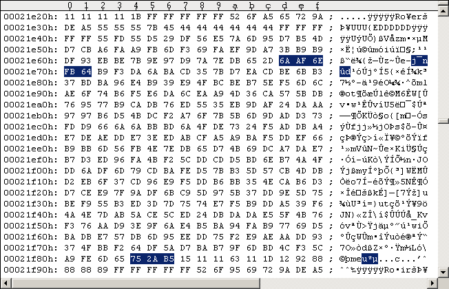
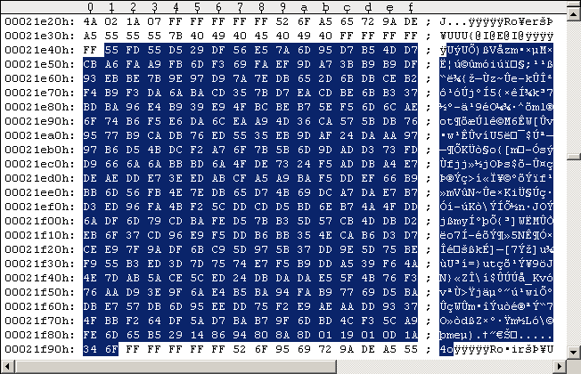
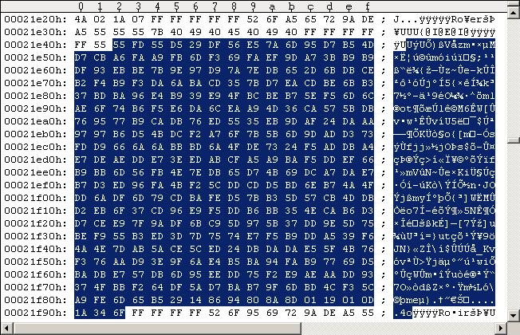

Main Index Routine Index Memory IndexOld RapidLok6 patches [DEPRECATED!]
There are 4 possible problems that need a little "fix". Be sure to notice the paragraph on address restrictions below when you apply patches. First we have to fix the length of the Track 36 Key Sector data, it's explained in the "Track 36 Key Sector details". As also described there we have a problem with the byte-ready count at a wrong Bit rate in the $0480 Track 36 handler routine. The value is stored to [$0150] and must be between 0 and $20 as this is checked in a $0415 routine addon ($049F-CMP). So we'll modify the RapidLok code to always return a zero when reading the [$0150] memory location. It turns out that there is only one such code location: --- ORIGINAL CODE #1 --------------------------- 075D: AD 50 01 LDA $0150 0760: 85 1D STA $1D ; [$1D]:= [$0150] ------------------------------------------------ We simply edit the $075D-LDA to always read a 0 (zero) into the Akku register (third byte will be NOP): --- PATCHED CODE #1 ---------------------------- 075D: A9 00 LDA #$00 075F: EA NOP 0760: 85 1D STA $1D ; [$1D]:= 0 ------------------------------------------------ As all RapidLok routines are encrypted on disk we have to encrypt all our patches before we apply them to the G64 images. The $0300 routine decrypts the RapidLok code routines [$039C-$07FF]. Setting a breakpoint into the decryption loop at $0346 reveals that the original encrypted 3-byte $075D-LDA gets decrypted (xor'ed) with the 3 bytes $B6, $6C, $D9: --- ORIGINAL DECRYPTION #1 ------------------ 075D = |1B 3C D8| xor |B6 6C D9| = |AD 50 01| --------------------------------------------- A little math shows the 3 original encrypted bytes of the "LDA $0150" must be repaced with the following 3 bytes to get the "LDA #$00 / NOP": --- MANIPULATED DECRYPTION #1 --------------- 075D = |1F 6C 33| xor |B6 6C D9| = |A9 00 EA| --------------------------------------------- The $075D code is obviously located in the $07xx buffer which got read into memory by the $0300 routine: Job #4, Track 18 Sector 3. But there's another patch we have to do before we apply the changes to this sector in the G64 images: The 3rd problem occurs when we write the G64 images back to a 1541 disk. It seems some Tracks are too long in the G64 images and may overwrite themselves when written back. The tool nibwrite seems to cut the $7B hidden sectors to prevent this effect. If this is the case and you make a G64 disk image from such disks again you will need this patch also for WinVice gameplay. G64 images from original Pirates disks should not need this patch but we apply it here. The existence/length of the $7B hidden sectors gets checked, so we must fix the program code if they are cutted. The problem arises in a $0415 routine addon, see following codesnippet: --- $0415 routine addon snippet -------------------------------------------------------------- 048F: C8 INY ; start following data byte count with Y=1 0490: 20 26 07 JSR $0726 ; counts the $7Bs (returned in A) until next SYNC. CF:=1. 0493: E5 0E SBC $0E ; subtract Key for current Track 0495: 90 02 BCC $0499 ; branch if A<[$0E] (result negative) 0497: 49 FF EOR #$FF ; it's A>=[$0E] (result positive), CF=1 -> A:= -A Jump from $0495: 0499: 69 04 ADC #$04 049B: 30 06 BMI $04A3 ; all ok if: [$0E]-4 <= #7Bs <= [$0E]+4, so don't branch here! ---------------------------------------------------------------------------------------------- 04A3: 0E 40 04 ASL $0440 ; Kills the head read command at $043E. Avoid this!!! ---------------------------------------------------------------------------------------------- We must under all circumstances avoid the $049B-BMI branch to $04A3 as this will kill the $043E-LDA head read command. The result of the $0725 routine (number of $7B's in the hidden sector; called at $0726) must be in close range around the [$0E] value to avoid the $049B-BMI. The following code snippet shows the end of the $0725 routine. The Akku register value and Carry flag value are only used in the $0415 routine addon above. You may check all routines calling the $0725 routine to verify this. --- ORIGINAL CODE #2 --------------------------------------------- 0730: 98 TYA ; return data byte count in A and Y 0731: 38 SEC ; CF:=1 0732: 60 RTS ------------------------------------------------------------------ So overwrite the TYA and SEC commands with a command loading the [$0E] value into the Akku register: --- PATCHED CODE #2 ---- 0730: A5 0E LDA $0E ------------------------ As mentioned before we have to encrypt our patches before we can apply them to the G64 images. The following two snippets show first how the original decryption takes place in the $0300 routine and second how we have to change it: --- ORIGINAL DECRYPTION #2 --------- 0730 = |52 AC| xor |CA 94| = |98 38| ------------------------------------ --- MANIPULATED DECRYPTION #2 ------ 0730 = |6F 9A| xor |CA 94| = |A5 0E| ------------------------------------ The $075D/$0730 addresses belong to the $07xx buffer which is read in the $0300 routine from Track 18 Sector 3. I used the Maverick v5.04 GCR Editor (in WinVice) to "edit" the G64 images. You may press "Shift+H" inside the GCR Editor to get the list of commands. The following Figure shows the list of $08-headers and $07-data-sectors. Select $07-data-sector 3 and press space to load it. Please read the "Maverick v5.04 GCR Editor Bugfix" section below if you encounter any problems with the GCR Editor (i.e. wrong sector data displayed).
Figure #2: Select Track 18 Sector 3, $07 Data Sector.The following two Figures show the applied $075D/$0730 patches (merged into left Figure) and fixed sector parity (right Figure). Press "S" to switch between the left and right screen half. You have to edit the hex-code on the right half of the screen (locate cursor over target byte and press space to edit it). The left half shows everything encoded in the usual GCR code as it gets written to disk (or to the G64 image). If you applied all modifications to the sector press "C" to let the GCR Editor automatically fix the sector parity.


Figures #3+#4. Left: $0730/$075D patches, right: fixed sector parity.Never save your modifications to disk/G64 from within the GCR Editor! Use "UltraEdit" in hex-mode to apply the changes directly to the G64 images (GCR code). The following Figure #5 shows the original Track 18 Sector 3 of the Pirates disk side 1 G64 image (PAL), Figure #6 shows the modifications. As your offsets may be different you can use the first 8 bytes of the GCR encoded $07-data-sector 3 in Figure #2 (left half) as search string.

Figure #5: Original Track 18 Sector 3 of Pirates disk side 1 (PAL).
Figure #6: Patched Track 18 Sector 3 ($0730/$075D & sector parity).The 4th problem is a $0415 routine addon calculating and checking a codesegment checksum ($0497-SBC): it adds every second byte in the range [$0402-$047C,$0500-$07FE] (odd addresses are skipped). The following code snippet is part of the $050D routine and shows the only code location where the [$0150] value is set. As we don't need the [$0150] value anymore, we can simply overwrite the $0522-STX command. --- ORIGINAL CODE #3 ---- 0521: 18 CLC 0522: 8E 50 01 STX $0150 0525: AD 01 1C LDA $1C01 ------------------------- As CF:=0 ($0521-CLC) we can replace the 3-byte long STX command with a 2-byte BCC-command (which will always branch) as follows. --- PATCHED CODE #3 ----- 0521: 18 CLC 0522: 90 01 BCC $0525 0524: 42 0525: AD 01 1C LDA $1C01 ------------------------- The $0524 byte is then abandoned and can be used to fix the codesegment checksum as it's located on an even address (remember odd addresses are skipped)! The $050D routine is obviously located in the $05xx buffer which got read into memory by the $07B0 entry routine: Job #2, Track 18 Sector 9. As before we have to encrypt our changes before we can write them out to the G64 images. The following two snippets show first how the original decryption takes place in the $0300 routine and second how we have to change it: --- ORIGINAL DECRYPTION #3 ------------------ 0522 = |EB 9A 95| xor |65 CA 94| = |8E 50 01| --------------------------------------------- --- MANIPULATED DECRYPTION #3 --------------- 0522 = |F5 CB D6| xor |65 CA 94| = |90 01 42| --------------------------------------------- You may set the $0524-abandon-byte first to 0 (zero) and break on the checksum check at $0497-SBC ($0415 routine addon) to get the correct one more easily. Now load Track 18 Sector 9 into Maverick v5.04 GCR Editor as before and apply the modifications. Don't forget the sector parity. Then apply the changes in the GCR code to the G64 images using UltraEdit. The following Figure #7 shows the original Track 18 Sector 9 of the Pirates disk side 1 (PAL) and Figure #8 the modifications.

Figure #7: Original Track 18 Sector 9 of Pirates disk side 1 (PAL).
Figure #8: Patched Track 18 Sector 9 ($0522 & sector parity).You have to do this on both G64 images (side1 & side2), of course. The patches apply to both the PAL and NTSC versions of Pirates. The only difference between those two versions should be the timing in the "Exit routines + general loading loop" at [$038C-$03FF] that get transferred to the C64 (see the first tutorial "Microprose Pirates 1987 C64 - Getting a clean image" on this). If you have done the changes the game is ready to run in WinVice v1.22 and on the C64. I never encountered a G64 Pirates image (with above patches and Track 36 length fix applied) that was not working in WinVice v1.22! If you want to play the game on the real C64 read the remastering instructions.
Address restrictions for patching RapidLok There are a few locations where we should be careful patching RapidLok's code. Patching is possible of course, but we would have to edit some Track 18 Directory entries (I'd like to avoid this). The "problem" arises in the $0300 routine (see following snippet): --- $0300 routine addon snippet ----------------------------------------------------------- 0322: AC 94 02 LDY $0294 ; "Current buffer-index" (e.g. Y=2) Jump from $032E: 0325: B5 77 LDA $77,X ; start track & sector ID of file to find & read (encrypted) 0327: 59 17 07 EOR $0717,Y 032A: 95 D6 STA $D6,X ; [$D6-$D7]:= [$77-$78] xor [$0718-$0719] (if e.g. Y=2) 032C: 88 DEY 032D: CA DEX 032E: 10 F5 BPL $0325 ------------------------------------------------------------------------------------------- The file's starting Track and Sector ID is read from it's Track 18 Directory entry and stored to [$77-$78] at $07CE/$07D0 in the $07B0 routine (encrypted). The above code decrypts [$77-$78] by XOR'ing with the [$0717,Y] memory values. The Y register value comes from the [$0294] "Current buffer- index" which is simply a pointer to the start of the file's Directory entry (which was in memory when the $07B0 routine started). There may be 8 file entries per Directory sector, so [$0294] may take the values $02, $22, $42, $62, $82, $A2, $C2 and $E2. So ($0717,Y) covers the addresses $0718-$0719 $0738-$0739 $0758-$0759 $0778-$0779 $0798-$0799 $07B8-$07B9 $07D8-$07D9 So be careful to avoid those address ranges when you patch RapidLok's code (or you have to fix the Directory entries too).
Maverick v5.04 GCR Editor "Bugfix" Sometimes the GCR editor has problems reading a sector and shows wrong sector data, maybe it gets confused by the unusual short 4-byte Sync marks. If this is the case simply make a copy of the G64 images and shift the actual sector data to one higher offset, so the first data byte is doubled and the first $FF of the following Sync mark is overwritten. The following Figures #7 and #8 demonstrate this on Track 18 Sector 9.

Figure #9: Original Track 18 Sector 9.
Figure #10: "Shifted" Track 18 Sector 9, Maverick v5.04 GCR Editor "Bugfix".If you apply this workaround the Track/Sector table in above Figure #2 recognizes the doubled first byte and shows wrong data for the modified sector. This is ok. When you select that sector and press space the correct sector data is displayed and you can start modifying! Keep in mind that the automatic fixing of the sector parity may fail if you apply this workaround. But in my tests the GCR Editor always calculated the correct parity. Alternatively you can obtain the correct sector parity from the 1541 Kernal. The following code snippet shows the location where the parity gets checked when a sector is read (taken from AAY1541). --- 1541 ROM: $F4D1 Read sector routine (AAY1541) -------------- F4FB: 20 E9 F5 JSR $F5E9 ; calculate parity of data block F4FE: C5 3A CMP $3A ; agreement? F500: F0 03 BEQ $F505 ; yes F502: A9 05 LDA #$05 ; 23, 'read error' ---------------------------------------------------------------- So apply the patches to a sector, break on $F4FE (enter
dev 8:andbreak f4fein WinVice's Monitor), load the patched sector and you get the sector parity in the Akku register. You may use the Retro Replay Cartridge ROM in WinVice v1.22 (File - Attach cartridge image - Retro Replay image) to load the sector (e.g. "@BR 12 09 10" will read Track 18 Sector 9 to $1000 memory location).